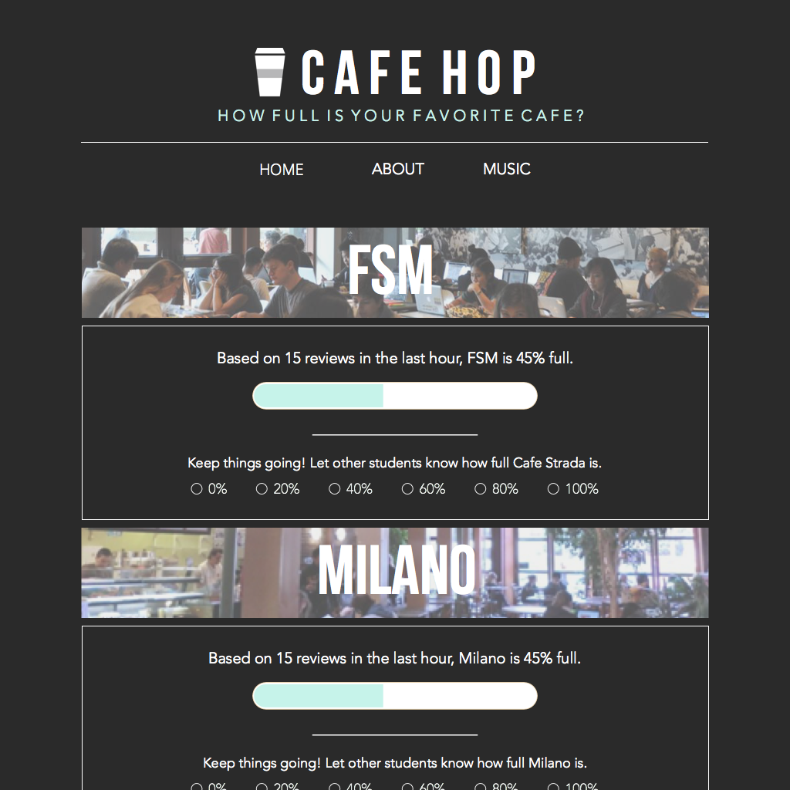
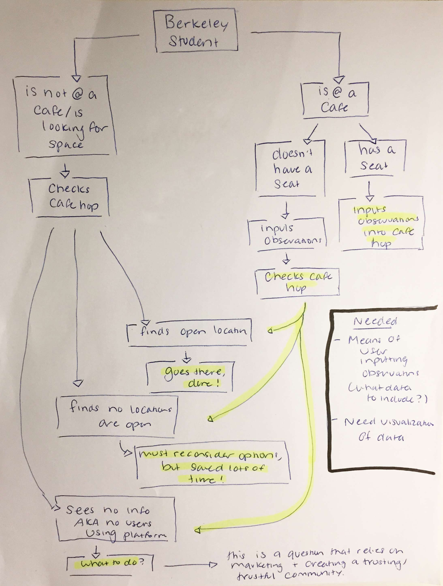
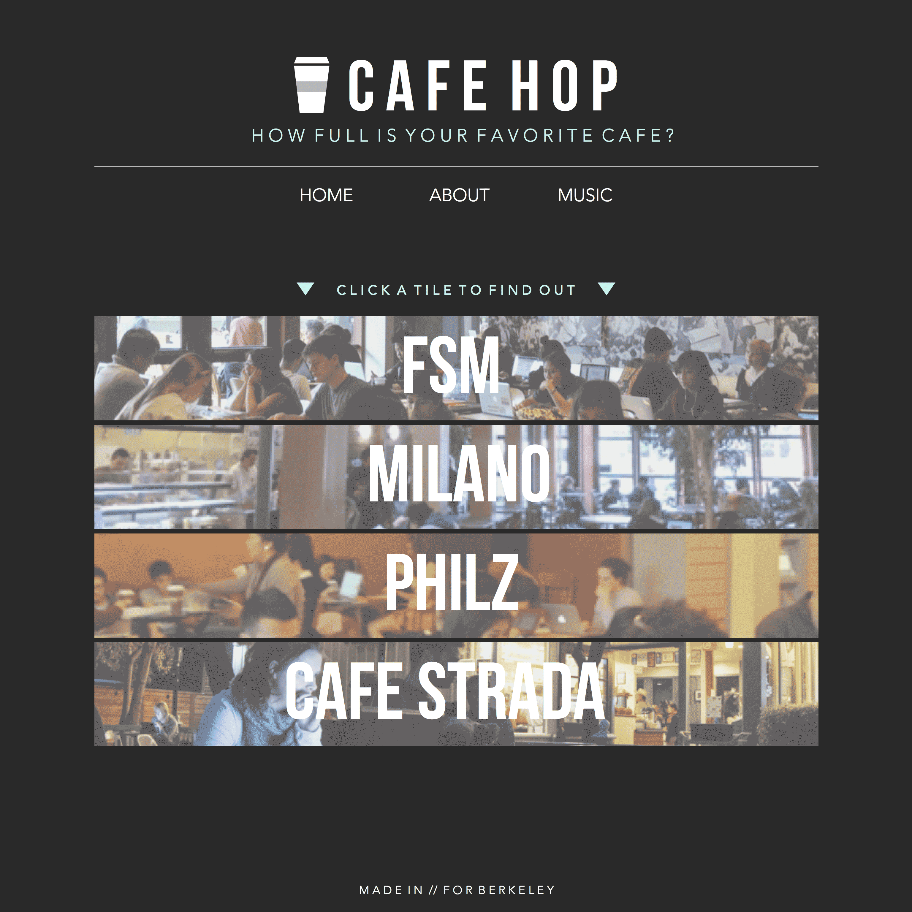
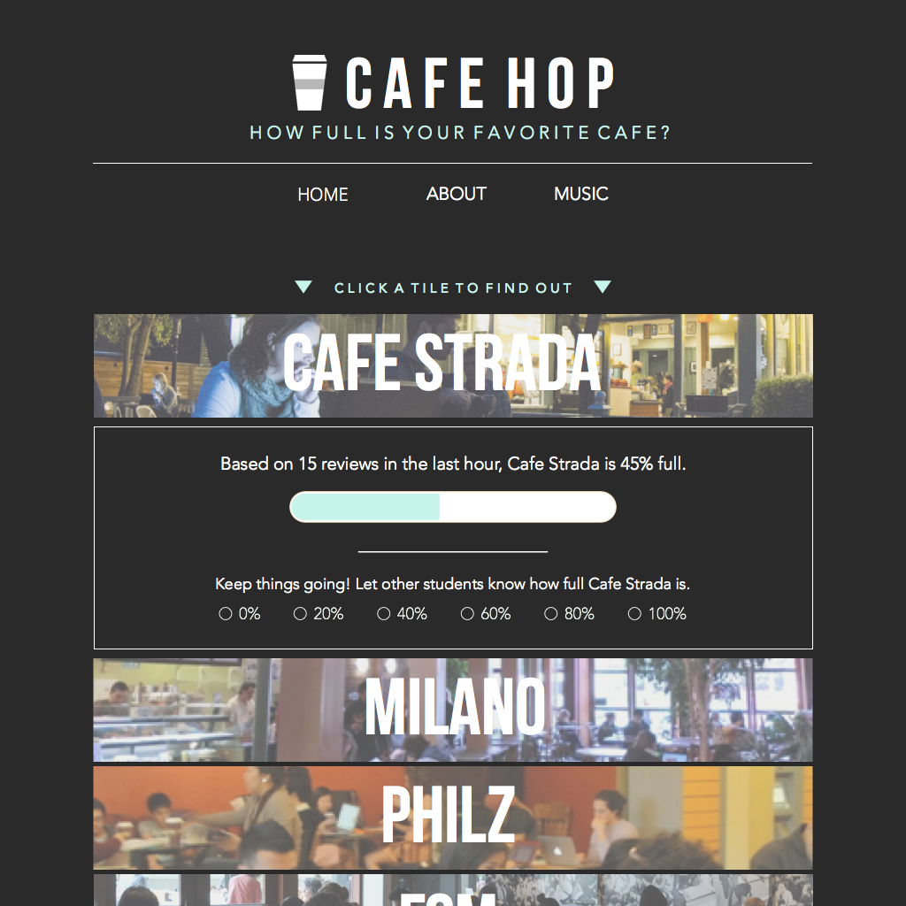

CafeHop
Team: Ji-hern Baek / Rahul Doraiswami
My good friend, Rahul, and I decided to work on this cool project to aid students when they're looking for study spaces. My contributions include all of the designs, including the service flow, as well as the front end implementation. In total, this project took about one week.
See Our Site

The Problem
Berkeley has a serious lack of decent study spaces. Despite going cafe to cafe, it's always a hassle finding an open seat with an available outlet. Not to mention you waste so much time moving around. Of course, when Rahul and I first thought of this problem, we understood our main limitation: we couldn't do much to expand those spaces. As such, we came up with a simple, crowdsourcing platform idea that would allow users to input information about cafe capacity, as well as receive said information. Naturally, this means less time wasted.
Ideation + Service Flow
At first, we referenced a project that was started at Columbia called Density. This particular project was initially aimed to provide an estimate regarding campus library capacity by accessing the number of people logged onto the wifi and tracking the locations. We thought this would be a good way of providing an accurate estimate. However, we were immediately faced with the problem that our platform was targeting privately owned cafe's. It would be difficult for us to access the various networks.
We shifted our direction and noted that in order for us to provide a gauge of cafe capacity, we would have to either ask the managers to provide that information or crowdsource it. The latter seemed more plausible. At this point, we constructed a service flow with our platform.

Design
We wanted to keep our first release simple and test out our primary features. Accordingly, we didn't have any complex information architectures to map out. We took a very simple interface and styled it creatively. To note, we explicated most of instructions, so that users could come to the website and know what to do without having to go through any prior onboarding procedures. Additionally, we wanted to make the platform both friendly and useful, so we added a small music tab to provide students with a little help whilst studying.
Future Additions
As mentioned above, our first release was intended to be simple. In doing so, we came across a variety of additions we need to implement. In terms of functionality, we're working to incorporate a function that better (UX-wise) inhibits spam votes. Additionally, we hope to remove the page of the refresh filter and dynamically display data. In terms of design, we're working to incorporate javascript show/hide functions for the cafes, so as to provide space for more locations. We also hope to utilize more space and provide more fields regarding furnishings, outlets, environment, etc.
 